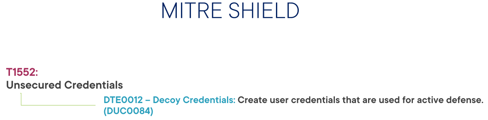

Análisis de archivos/repositorios con TruffleHog
Introducción
TruffleHog es una herramienta de código abierto dedicada al análisis de archivos desarrollada y mantenida por Truffle Security.
Para dominar la seguridad de nuestra empresa es importante poseer un control completo de nuestras credenciales y secretos. Puesto que un entorno completamente seguro es una utopía, uno de nuestros objetivos será reducir el tiempo entre un robo o filtración de credenciales y la detección por nuestra parte para ponerle remedio.
En esta sección veremos como usar TruffleHog para identificar y detectar estas credenciales o secretos que, por error, despiste o cualquier otra razón están almacenados en nuestros repositorios de código fuente. Para este cometido nos centraremos específicamente en Github, probablemente el más usado.
TruffleHog
TruffleHog sirve como complemento al trabajo de un Blue Team. Utiliza la línea de comandos para operar y es relativamente simple de configurar, usar y aprender.

Puede usarse para auditar uno o varios repositorios simultánemamente, así como configurarlo para para cumplir objetivos de seguridad genéricos o específicos.
Hay dos puntos clave a la hora de utilizar TruffleHog:
-
Realizar un análisis o auditoría de un repositorio de código fuente como Github (repo de ahora en adelante).
Se puede realizar una búsqueda utilizando la configuración por defecto o con cambios mínimos. Lo bueno de este punto es que permite hacerse una idea inicial de la capacidad de Trufflehog para realizar un análisis rápido.
-
Realizar un análisis customizado o personalizado. Puesto que TruffleHog puede devolver una cantidad de información tal que resulte abrumadora para el Blue Team correspondiente, se pueden realizar búsquedas muy específicas.
Personalizar y configurar TruffleHog para casos muy específicos es una funcionalidad muy interesante.
Merece la pena comentar que se pueden utilizar distintas instancias de TruffleHog en distintos entornos (test, preprod, prod...) con distintas configuraciones.
TruffleHog trabaja tanto con expresiones regulares como con un concepto conocido como entropía:
Cita
[TruffleHog] will go through the entire commit history of each branch, and check each diff from each commit, and check for secrets. This is both by regex and by entropy. For entropy checks, truffleHog will evaluate the shannon entropy for both the base64 charset and hexadecimal char set for every blob of text greater than 20 characters comprised of those character sets in each diff. If at any point a high entropy string >20 characters is detected, it will print to the screen.”
Es decir, calcula la entropía de las diferencias entre cada commit, tanto en base64 como hexadecimal y para cada texto mayor de 20 carácteres.
Aclaración
El concepto de entropía o entropía de Shannon proviende de la teoría de la comunicación y mide la incertidumbre de una fuente de información. No obstante, esta definición es imprecisa. La definición real de entropía es el grado de información/desinformación que tenemos de un sistema. Es decir, cuanta más información tengamos menos entropía.
Citando a la Wikipedia:
"Los símbolos con menor probabilidad son los que aportan mayor información; por ejemplo, si se considera como sistema de símbolos a las palabras en un texto, palabras frecuentes como «que», «el», «a» aportan poca información, mientras que palabras menos frecuentes como «corren», «niño», «perro» aportan más información. Si de un texto dado borramos un «que», seguramente no afectará a la comprensión y se sobreentenderá, no siendo así si borramos la palabra «niño» del mismo texto original. Cuando todos los símbolos son igualmente probables (distribución de probabilidad plana), todos aportan información relevante y la entropía es máxima. "

Antes de continuar, deben nombrarse los frameworks o marcos de ciberseguridad. Hay muchos marcos disponibles y la decisión de elegir uno en concreto depende de la idoneidad para la empresa en cuestión.
El NIST es una de las organizaciones que elabora estos marcos y que abarcan un conjunto de normas, directrices y mejores prácticas para alcanzar un nivel de madurez adecuado en cuanto a ciberseguridad. Como véis en la imagen, las categorías están divididas en: identificar, proteger, detectar, responder y recuperar.

Cada categoría contiene otras subcategorías que están vinculadas a actividades específicas que una organización necesita llevar a cabo para mejorar su nivel de madurez en ciberseguridad.
TruffleHog es una herramienta que ayuda a una organización en la categoría de anomalías y eventos. En general, esto ayuda a una organización a tener mejor información para preparar futuras estrategias de seguridad, mejorarla y poder mitigar aún más el riesgo.
TruffleHog forma parte del proceso de correlación y datos de eventos. El resultado de la herramienta puede determinar qué impacto pueden tener los eventos maliciosos así como ayudar a determinar los umbrales adecuados para las alertas de seguridad.
También tenemos nuestra ya conocido marco MITRE ATT&CK, que proporciona diferentes técnicas que un actor de amenaza (threat actor) puede utilizar contra nuestra organización. En esta sección trataremos las credenciales no seguras.

Queremos identificar qué repos desplegados en nuestro entorno contienen fugas de datos sensibles como secretos y/o credenciales.
Vamos a ver cómo identificar credenciales no seguras en repos y como de fácil es para los potenciales atacantes poder realizar el reconocimiento del entorno, probable precursor de un ataque.
Por último, MITRE Shield es un marco que cubre las técnicas de ataque, así como la forma en que podemos defender nuestros entornos.
Utilizando esto podemos vincular las técnicas de ataque con los métodos de defensa:

Es decir, hacer un commit con credenciales intencionadamente inseguras para identificar a los atacantes.
Dependiendo de los procesos, madurez y prioridades de una empresa, TuffleHog puede ser desde ejecutado manualmente por los desarrolladores hasta formar parte de un proceso automatizado de DevSecOps, donde se ejecute mediante GitHub actions, por ejemplo.
Auditando repositorios para detectar filtrado de credenciales
Unas credenciales filtradas o expuestas suponen, como es obvio, un gran riesgo para cualquier negocio. Si la empresa tiene suerte, estas credenciales expuestas pueden llevar a un uso razonable en tiempo y recursos para tratar un incidente de seguridad con poco impacto. En el peor escenario puede desembocar en una gran pérdida, tanto económica como reputacional.
Algunos de los riesgos de unas credenciales filradas son:
- Exfiltración de datos
- Movimientos laterales: es mucho más difícil detectar a los actores maliciosos utilizando usuarios autenticados accediendo a los sistemas y realizando movimientos laterales, es necesario preventirlo con antelación.
- Escalada de privilegios
Aunque vayamos a centrarnos en Github, es importante saber que el código puede estar almacenado en muchos y muy diferentes lugares: gestores de paquetes de software como pip si se usa Python, el código de los sitios web con contraseñas "hardcodeadas", Sharepoint u otros sistemas de compartición de archivos como Teams, Slack o Discord. Y por último, en el historial de commits, que es donde haremos hincapié.
Las credenciales pueden aparecer en los repositorios por diferentes motivos, como desarrolladores que suben código con credenciales por puro despiste, código legacy, tras una revisión de código...
¿Qué hacer si aparecen credenciales filtradas?
No hay una repuesta clara a esta pregunta, depende de cada caso.
La respuesta más obvia sería eliminarlas del código y santas pascuas. Esto puede resultar sencillo en un código más o menos simple pero en un código más maduro y complejo podría resultar una tarea bastante titánica y habría que estudiarlo.
Otra solución sería simplemente desactivar las cuentas cuyas credenciales han sido expuestas, convirtiéndolas en inútiles. Esta solución permite conservar el historial de commits y mitigar el riesgo.
Por último, si un repositorio no tiene una razón de peso para ser público, podríamos convertirlo en privado.
Diferencias en nuevas versiones de Trufflehog
TruffleHog sigue usando entropía para detectar secretos en el código. Sin embargo, en las versiones más recientes (TruffleHog v3+), el método ha cambiado y ahora la detección basada en entropía no es la opción principal.
Cambios en la detección de entropía en TruffleHog v3
-
Antes, en TruffleHog v2, podíse podía habilitar la detección por entropía con
--entropy=True. -
En TruffleHog v3, la detección por entropía ya no es el principal método de escaneo, ya que ahora se basa más en patrones de claves conocidas y verificaciones de validez con APIs.
-
La opción
--no-entropyse usa ahora en algunos comandos para deshabilitar cualquier análisis basado en la aleatoriedad.
¿Por qué este cambio?
-
La detección por entropía generaba muchos falsos positivos, especialmente con datos aleatorios o hashes.
-
Ahora, TruffleHog usa firmas específicas para identificar claves API reales y tokens válidos, en lugar de solo cadenas con alta aleatoriedad.
Instalación
Para instalar Trufflehog, podemos utilizar cualquiera de los métodos que nos proponen aquí
Resultados verificados y sin verificar en Trufflehog
En TruffleHog, la diferencia entre verificado y sin verificar está relacionada con la confianza que TruffleHog tiene en que la cadena que ha encontrado es, de hecho, un secreto válido y no un falso positivo.
1. Verificado
Cuando TruffleHog marca una cadena como verificada, significa que ha realizado una comprobación adicional y tiene mayor certeza de que esa cadena es un secreto real, como una clave de API válida, un token de acceso, una contraseña, etc.
TruffleHog realiza esta verificación principalmente mediante consultas API a los servicios de los cuales pueden provenir las claves o tokens (como GitHub, AWS, Google Cloud, etc.). También utiliza patrones predefinidos que se corresponden con claves API conocidas y valida el formato de las claves encontradas.
-
Ejemplo
Si TruffleHog encuentra una cadena con el formato de una clave de AWS, realiza una verificación llamando a la API de AWS para ver si esa clave es válida (aunque no realiza una validación real de permisos, sino más bien un chequeo de formato y existencia).
2. Sin Verificar
Una cadena "sin verificar" es una sospecha o posible secreto que TruffleHog ha encontrado, pero no puede confirmar con certeza si es válido. Esto se debe a que el formato puede coincidir con una clave API conocida, pero TruffleHog no tiene un mecanismo para verificarla en el servicio correspondiente.
Estas cadenas son generalmente detectadas mediante un análisis de patrones o detección por entropía, donde se observa la complejidad o el formato de la cadena, pero no se hace una verificación en tiempo real con las APIs de los proveedores.
Demos
Tarea
- Comprueba la diferencia entre un resultado verificado:
trufflehog git https://github.com/LuD1161/secrets_pub_repo --no-update - Y otro sin verificar:
trufflehog github --repo=https://github.com/lyft/clouddriver.git --no-update
Atención
Necesitarás estar autenticado con tus credenciales de GitHub para que no te dé error al intentar escanear el repositorio.
Adjunta captura de pantalla y comenta las diferencias.
Usando Trufflehog con un hook pre-commit para prevenir la publicación accidental de secretos
Hook
Un hook en Git es un script que se ejecuta automáticamente en respuesta a ciertos eventos en un repositorio. Estos eventos pueden incluir acciones como commits, merges, pushes, etc. Los hooks permiten automatizar tareas y asegurar que ciertas condiciones se cumplan antes o después de que se realicen estas acciones.
Pre-commit
Un pre-commit hook es un tipo específico de hook que se ejecuta antes de que se realice un commit. Su propósito es verificar que el código cumple con ciertos estándares o reglas antes de que se añada al repositorio. Por ejemplo, un pre-commit hook puede verificar el estilo del código, ejecutar pruebas unitarias, o asegurarse de que no se están exponiendo secretos o credenciales sensibles.
-
Ejemplo de Uso
Hook: Puedes tener un hook que envíe una notificación a Slack cada vez que se haga un push al repositorio.
Pre-Commit Hook: Puedes tener un pre-commit hook que verifique que todos los archivos Python cumplen con las normas de estilo PEP8 antes de permitir el commit.
Estos hooks se configuran en el directorio .git/hooks/ de tu repositorio.
Demo
En primer lugar, debemos instalar pre-commit
sudo apt update
sudo apt install pre-commit
mkdir demo
cd demo
git init
nano test.py
Y colocaremos dentro de él nuestro código de ejemplo:
import os
import mysql.connector
from fastapi import FastAPI
app = FastAPI()
def _get_db_connection():
return mysql.connector.connect(
host="localhost",
user="root",
database="CarDatabase",
password=os.environ.get("MYSQL_ROOT_PASSWORD"))
@app.get("/")
def read_root():
return { "message": "Hello World!"}
@app.get("/cars")
def read_cars():
conn = _get_db_connection()
cursor = conn.cursor()
cursor.execute("SELECT * FROM Cars")
cars = cursor.fetchall()
cursor.close()
conn.close()
return cars
Ahora procedemos a crear el archivo .yaml que configurará nuestro pre-commit. Este archivo estará en la raíz del directorio del respositorio
repos:
- repo: local
hooks:
- id: trufflehog
name: TruffleHog
description: Descubre secretos expuestos en tu repositorio
entry: bash -c 'trufflehog git file://. --since-commit HEAD --no-verification --fail --no-update'
language: system
stages: ["commit", "push"]
E instalamos este pre-commit
pre-commit install
Hacemos un primer commit:
git add .
git commit -m "Commit inicial"
import os
import mysql.connector
from fastapi import FastAPI
app = FastAPI()
def _get_db_connection():
return mysql.connector.connect(
host="localhost",
user="root",
database="CarDatabase",
password=os.environ.get("MYSQL_ROOT_PASSWORD"))
@app.get("/")
def read_root():
return { "message": "Hello World!"}
@app.get("/cars")
def read_cars():
conn = _get_db_connection()
cursor = conn.cursor()
cursor.execute("SELECT * FROM Cars")
cars = cursor.fetchall()
cursor.close()
conn.close()
return cars
@app.get("/test")
def read_root():
secret = "github_pat_" + "11AAEYWLQ0OuQDvBin2o7S_qARB97aCXcE1vim2Idbos7fwqbd7g2YguVH5kk5XIUBF4JQFWSNBkOkAAg7"
return { "message": "Hello World!"}
Tarea
Realiza un nuevo commit, observa y describe lo que ves.